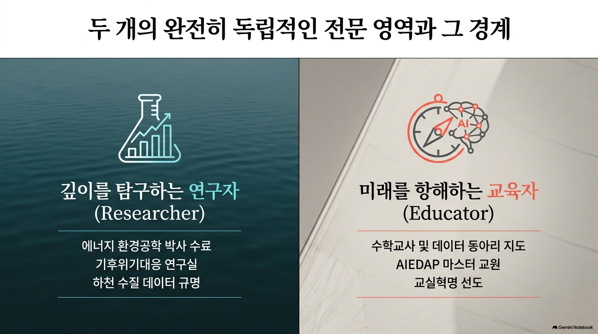
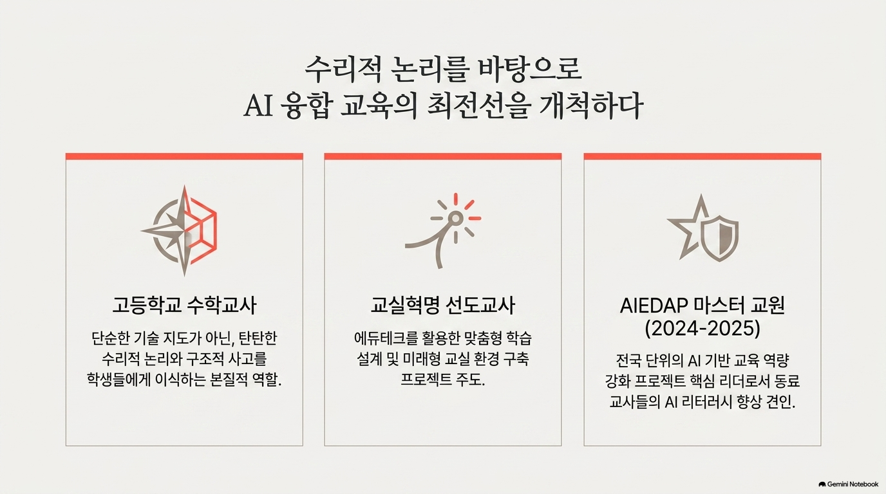

기후위기대응 연구원 & AI 융합 교육 전문가

에너지 환경공학과 박사 수료 (2026)
하천 수질 데이터 분석 모델링 및 오염 부하 예측 연구를 수행합니다.
기후위기대응 연구실의 연구 데이터와 학술적 엄격함(Research Rigor)을 바탕으로 전문적인 솔루션을 제공합니다.

AIEDAP 마스터 교원(2024-2025) 활동 및 교직원 AI 연수 사례입니다.
데이터 분석 동아리 지도 및 학생 참여형 하천 수질 시각화 프로젝트 결과물입니다.
연구 협업 제안, 교육 자료 문의 및 자유로운 의견을 남겨주세요.
* 누구나 자유롭게 의견을 남기고 소통할 수 있는 오픈 공간입니다.